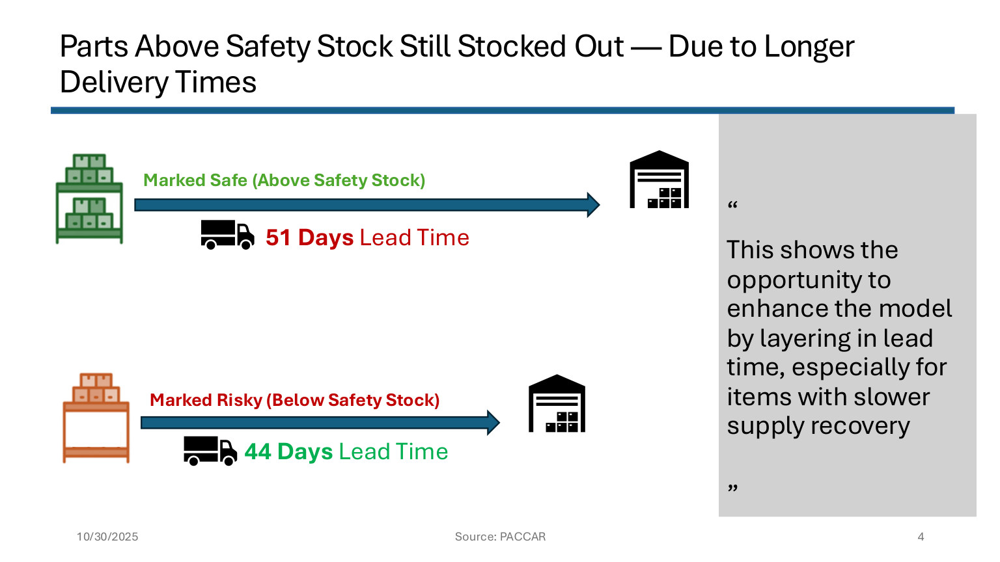

Actual project visual with logistics context
Operations · Supply chain analytics
PACCAR Inventory Optimization
This project focused on inventory risk at PACCAR Parts, where supplier reliability, lead time, and in transit inventory affected whether parts were actually available when needed.
We achieved more than a basic stockout review. Our analysis showed that parts marked as safe could still stock out when delivery timing and incoming supply were not reflected clearly enough in the decision process. That finding helped reframe the issue from manual review alone to better risk signals inside inventory planning.
- Examined stockout patterns through supplier reliability, delivery timing, safety stock, and in transit inventory.
- Identified how availability assumptions can create false confidence when incoming supply is delayed.
- Presented recommendations to improve inventory monitoring and support more proactive operational decisions.
Supply chainOperational riskExcelBusiness recommendations